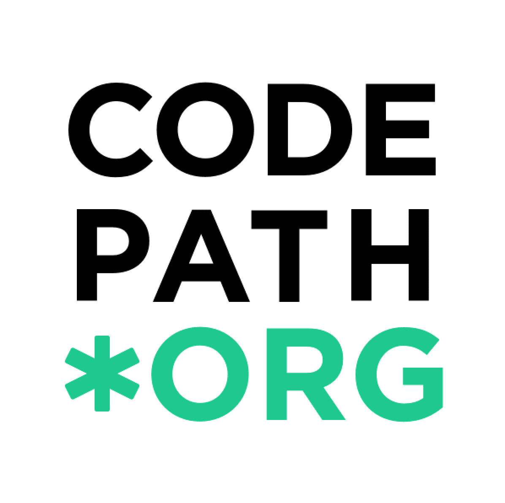

<!DOCTYPE html>
<html>

<style>
* {
    box-sizing: border-box;
}

.row::after {
    content: "";
    clear: both;
    display: table;
}

/* Spacing between rows */
.row + .row { margin-top: 40px; }

/* For mobile phones: */
[class*="col-"] {
    width: 100%;
}

.col-prof-pic { margin:auto; }
.col-proj-pic { display:none; }

.container {
    width:max-width;
    padding:15px;
}

ul {
    list-style: none;
    margin-left: 0px;
    padding-left: 15px;
    padding-bottom: 0px;
    margin-bottom: 0px;
    columns: 1;
    -webkit-columns: 1;
    -moz-columns: 1;
}

@media only screen and (min-width: 500px) {
    /* For desktop: */
    .container {
        max-width:800px;
        margin:auto;
    }
    .col-bio {max-width: 65%;}
    .col-prof-pic {float:right; margin-left:20px;}
    .col-proj-pic {max-width: 25%; float:left; display:inline; padding-right: 20px; }
    .col-proj-desc {max-width: 75%; float:left;}
}

@media only screen and (min-width: 800px) {
    /* For desktop: */
    ul {
        columns: 2;
        -webkit-columns: 2;
        -moz-columns: 2;
    }
}


a {
    color: #1772d0;
    text-decoration:none;
}

a:focus, a:hover {
    color: #f09228;
    text-decoration:none;
}

body,td,th,tr,p,a {
    font-family: 'Lato', Verdana, Helvetica, sans-serif;
    font-size: 14px;
    line-height:130%;
}

strong {
    font-family: 'Lato', Verdana, Helvetica, sans-serif;
    font-size: 15px;
	font-weight: 700;
}

heading {
    font-family: 'Lato', Verdana, Helvetica, sans-serif;
    font-size: 22px;
}

papertitle {
    font-family: 'Lato', Verdana, Helvetica, sans-serif;
    font-size: 14px;
    font-weight: 700;
}

li span {
    margin-left: -11px;
}

name {
    font-family: 'Lato', Verdana, Helvetica, sans-serif;
    font-size: 40px;
}

.col-proj-pic img {
    max-width: 100%;
}

.cropcircle {
	border-radius: 100%;
    background: #eee no-repeat center;
    background-size: cover;
}

#profile-img{
    height: 250px;
    width: 250px;
    background-image: url(images/RitikRaina.jpeg);
}

span.highlight {
    background-color: #ffffd0;
}

label {
    font-family: 'Lato', Verdana, Helvetica, sans-serif;
    font-size: 14px;
    font-weight: 700;
    cursor: pointer;
}

.reveal {
  max-height: 0;
  transition: max-height 0.15s ease-out;
  overflow: hidden;
}

input:checked + label + .reveal {
  max-height: 500px;
  transition: max-height 0.25s ease-in;
}

input + label:after { content: ""; }
input:checked + label:after { content: ""; }

</style>


<head>


<!-- Global site tag (gtag.js) - Google Analytics -->
  <script async
src="https://www.googletagmanager.com/gtag/js?id=UA-111894110-1"></script>
<script>
  window.dataLayer = window.dataLayer || [];
    function gtag(){dataLayer.push(arguments);}
      gtag('js', new Date());

        gtag('config', 'UA-111894110-1');
</script>

  <title>Ritik Raina</title>
  <meta name="viewport" content="width=device-width, initial-scale=1">
  <link rel="shortcut icon" href="images/UCSDLogo.png" type="image/x-icon">
  <link href="https://fonts.googleapis.com/css?family=Lato:300,400,400i,700" rel="stylesheet">

</head>

<body>
<div class="container">

	<hr /> <br />
  <div class="row">
    <div id="profile-img" class="col-prof-pic cropcircle">
    </div>
    <div class="col-bio">
      <p align="center">
		  <name>Ritik Raina</name> <br />
		  <a href = "mailto:rraina@ucsd.edu">rraina@ucsd.edu</a>

	  </p>

      <p>I am a sophomore at <a href="http://www.ucsd.edu/">UC San Diego</a>
      pursuing a Bachelor of Science in <a href = "https://math.ucsd.edu/">
      cognitive science</a>, specializing in machine learning and
    neural computation.
      </p>

      <p>Last summer I worked at href="https://www.starcapital.id">Star Capital</a> as
      a machine learning intern on their Facial Recognition &amp; Detection research team
      working on computer vision. At UC San Diego, I am a TA
      for the <a href = "https://codepath.org/"> CodePath</a> iOS bootcamp and an undergraduate researcher at <a
        href="https://www.e4e.ucsd.edu">Engineers for Exploration</a>.
      Prior to that, I worked at VennPool, a UCSD startup, as a software engineer working on HTML/CSS and AWS.
      </p>

      <p align=center>

		<a href="http://www.github.com/rainarit">GitHub</a> &nbsp;/&nbsp;
    <a href="data/Resume-Ritik.pdf">CV</a> &nbsp;/&nbsp;
		<a href="http://www.facebook.com/rrainaa">Social</a> &nbsp;/&nbsp;
        <a href="https://www.linkedin.com/in/ritikraina">LinkedIn</a>

	  </p>
    </div>

</div><br /> <hr /><br /><br />


  <div class="row">
	  <heading>Experience</heading>
  </div>

	<div class="row">
    <div class="col-proj-pic"></div>
    <div class="col-proj-desc">
      <a href="http://www.codepath.org">
        <papertitle>CodePath</papertitle>
      </a><br>
      <strong>Tech Fellow</strong><br>
      <em>San Diego, CA </em > &bull; Winter 2020 - Present<br>
      <p>
        · Increased the largest pipeline of high-performing underrepresented engineers in tech via Codepath, a nonprofit that has raised $1 million from Facebook and is bringing industry level courses to 23+ universities. <br>
        · Taught Facebook-designed 12-week iOS course to campus teaching 45+ students the fundamentals of app development through the hands-on experience. <br>
        · As an instructor, I was required to maintain a high-level of understanding of the curriculum topics including but not limited to: Frameworks (i.e. WebKit, MapKit, ARKit, AVFoundation, Vision), iOS Libraries (AlamoFire, AlamoFireImage, MBProgressHUD, SwiftyJSON), Back-end (FireBase and Parse), TableViews and Passing Data, APIs (Twitter API, Parse API, Movies API), AutoLayout (constraints), CocoaPods
      </p>
    </div>
  </div>

  <div class="row">
  <div class="col-proj-pic"></div>
  <div class="col-proj-desc">
	<a href="http://starcapital.id/">
	  <papertitle>Star Capital</papertitle>
	</a><br>
	<strong>Machine Learning Intern</strong><br>
	<em>Jakarta, Indonesia </em > &bull; Summer 2019<br>
	<p>
    · Developed Python scripts which used Selenium, Request, and BeautifulSoup frameworks for evaluating web-scraping models. <br>
    · These models were then used to scrape credit rating documents off FinTech sites. <br>
    · Researched and developed CNN/Spatial models for training and evaluating facial detection & recognition systems based on employee facial data. <br>
    · Designed and implemented custom spatial algorithms and data structures for deriving facial landmarks.
  </p>
  </div>
</div>

  <div class="row">
    <div class="col-proj-pic"></div>
    <div class="col-proj-desc">
      <a href="https://www.linkedin.com/company/vennpool/">
        <papertitle>VennPool</papertitle>
      </a><br>
        <strong>Software Developer</strong><br>
        <em>San Diego, CA </em > &bull; Fall 2018 - Spring 2019<br>
      <p>
        · Designed and developed the company website’s interface using Bootstrap themes and CSS/Semantic UI.<br>
        · Communicated with mentors and investors as a part of the startup incubator, The Basement.<br>
        · Worked with Google Firebase APIs to authorize access to the application and control service operation access.
      </p>
    </div>
  </div>

  <div class="row">
    <heading>Projects</heading><br /><br />
    Open-source, group projects I worked on for courses and at hackathons.
  </div>

  <div class="row">
    <div class="col-proj-pic"></div>
    <div class="col-proj-desc">
  	<a href="On-Convex-Optimization.pdf">
  	  <papertitle>On Convex Optimization and Support Vector Machines</papertitle>
  	</a><br>
  	<strong>May 2018 &bull; Convex Optimization &bull; ECE 273 Final Project<br></strong>
  	<p>Support vector machines (SVMs) are an extremely powerful machine learning tool to solve various classification problems. Not only are they less prone to over-fitting due to large margins, but they are also easy to optimize due to their convex nature. In this paper we will review both soft and hard margin formulations of linear SVMs. First, we discuss how to solve soft-margin SVMs via dual formulation, and justify how the dual problem will in-fact give the optimal solution of primal form. Then, we discuss kernel tricks to solve non-linear classification using convex optimization. Finally, we perform classification on real-world data using both non-linear and linear SVMs using the algorithms devised prior.</p>
    </div>
  </div>

  <div class="row">
	<div class="col-proj-pic"></div>
	<div class="col-proj-desc">
	  <a href="https://github.com/arkingupta/Gentrification/">
		<papertitle>Gentrification in San Diego - Analyzing negative effects of gentrification in San Diego</papertitle>
	  </a><br>
	  <strong>May 2017 &bull; Data Visualization / Analysis / Python &bull; COGS 108 Final Project <br></strong>
	  <p>Analysis of the negative effects of Gentrification in San Diego in the 21st Century.
		Visualized the change in demographics of all neighborhoods in San Diego using heat maps.
		Identified neighborhoods effected the most by Gentrification and found patterns between multiple socio-economic factors such as Poverty, Population, Uninsurance and Property value.
		Languages/Tools Used: Python (Pandas, NumPy, Matplotlib, Patsy), Jupyter Notebooks.</p>
	</div>
  </div>

  <div class="row">

    <div class="col-proj-pic"></div>
    <div class="col-proj-desc">
      <a href="https://github.com/arkingupta/SentiMedia">
        <papertitle>SentiMedia - Sentiment analysis for YouTube comments</papertitle>
      </a><br>
      <strong>April 2017 &bull; Natural language processing / Machine learning /
        Python<br></strong><br>
      <i>Honorable Mention, California Institute of Technology HackTech 2017</i>
      <p>Data science powered web application to perform sentiment analysis on YouTube comments. Applied machine learning techniques on the model using a training dataset of 1 Million tweets.
	   Wrote python scripts for web scraping and performing sentiment analysis on the comments.
	  Languages/Tools Used: Python, Natural Language Toolkit, Flask.</p>
    </div>
  </div>

  <div class="row">
    <div class="col-proj-pic"></div>
    <div class="col-proj-desc">
      <a href="https://github.com/arkingupta/Intersect">
        <papertitle>Intersect - Mobile app to unify connecting with people on multiple social media</papertitle>
      </a><br>
      <strong>November 2016 &bull; Image recognition / Android
        (Java)<br></strong><br>
      <i>Best Use of NEC’s Image Recognition API, UC Berkeley CalHacks 2016</i>
      <p>Android application to ease the process of connecting with people on multiple social media.
			Integrated database, added Location tracking and developed the app structure.
			Languages/Tools Used: Java (Android), XML, Google Firebase.</p>
    </div>
  </div>

  <div class="row">
    <div class="col-proj-pic"></div>
    <div class="col-proj-desc">
      <a href="https://github.com/arkingupta/Trivents">
        <papertitle>Trivents - Web application to attend and create location-based events</papertitle>
      </a><br>
      <strong>October 2017 &bull; Location tracking and notification / Web
        Development<br></strong> <br>
      <i>Best Use of DocuSign’s E-Signature API, UC San Diego SDHacks 2016</i>
      <p>Mobile app to unify the process of connecting with people on multiple social media.
		Integrated the database, developed Location tracking functionality, and designed the app structure.
		Languages/Tools Used: JavaScript, HTML/CSS, MongoDB</p>
    </div>
  </div>

  <div class="row">
  <heading>Leadership Roles</heading>
  </div>

  <div class="row">
	<div class="col-proj-pic"></div>
	<div class="col-proj-desc">
	  <p>

		<a href="https://sangamsd.com/">
		<papertitle>SangamSD</papertitle>
		</a>
		<br><em>Tech Chair</em><br><br>

		<a href="https://sedsucsd.org/">
		<papertitle>Students for the Exploration and Development of Space</papertitle>
		</a>
		<br><em>Webmaster</em><br><br>

		</p>
	</div>
  </div>

  <div class="row">
  <heading>Selected Coursework</heading>
    &nbsp; (at UC San Diego)

      <ul>
        <li>COGS 118A - Supervised Machine Learning</li>
        <li>COGS 181 - Deep Learning and Neural Networks</li>
        <li>MATH 180A - Probablity</li>
        <li>MATH 20CE - Multivariable &amp; Vector Calculus</li>
		    <li>MATH 20AB - Calculus I &amp; II</li>
        <li>MATH 18 - Linear Algebra</li>

		    <li>CSE 101 - Design and Analysis of Algorithms</li>
        <li>CSE 100 - Advanced Data Structures </li>
        <li>CSE 30 - Computer Organization and Systems Programming</li>
        <li>CSE 21 - Mathematics for Algorithms and Systems Analysis</li>
        <li>CSE 20 - Discrete Mathematics</li>
	    	<li>CSE 15L - Software Tools &amp; Techniques</li>
        <li>CSE 12 - Data Strcutures &amp; OOP Design</li>
        <li>CSE 8AB - Object-Oriented Programming</li>
      </ul>
  </div>

  <br /><br /><hr />
  <div class="row">
  <p align="right">
    <font size="2">
		<center>
	  © 2020 Ritik Raina. All rights reserved. <br />
      Website sourced from <a href="http://people.eecs.berkeley.edu/~barron/">here.</a>

  		</center>
    </font>
  </p>
  </div>
   <hr />

</div>
</body>
</html>
